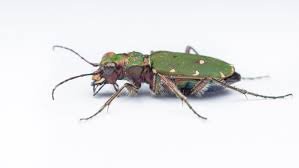
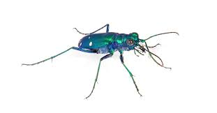
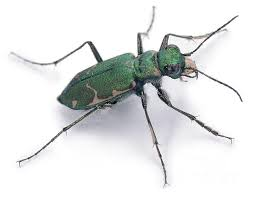

☀️
Tiger beetles are among the most fascinating and visually striking insects in the natural world. Known for their metallic colors—often shimmering green, blue, or bronze—they are not only beautiful but also highly skilled predators. Tiger beetles are usually found in open, sunny habitats such as sandy paths, riverbanks, and forest clearings, where they rely on speed and sharp vision to hunt.
These insects are considered some of the fastest runners in the insect kingdom. In fact, they can move so quickly that they briefly outrun their own eyesight, forcing them to stop repeatedly to relocate their prey. Using their long legs and powerful mandibles, tiger beetles chase down and capture small insects, playing an important role in controlling pest populations within their ecosystems.
Tiger beetles have a distinctive life cycle that includes both larval and adult stages as active predators. The larvae live in vertical burrows in the ground, where they wait patiently with only their heads visible. When unsuspecting prey passes by, the larva strikes with remarkable speed. Adults, on the other hand, are agile hunters that rely on both flight and running.
Because tiger beetles are sensitive to environmental changes, scientists often use them as indicators of ecosystem health. Their presence—or absence—can reveal important information about habitat quality and biodiversity.


